Conjugation tables
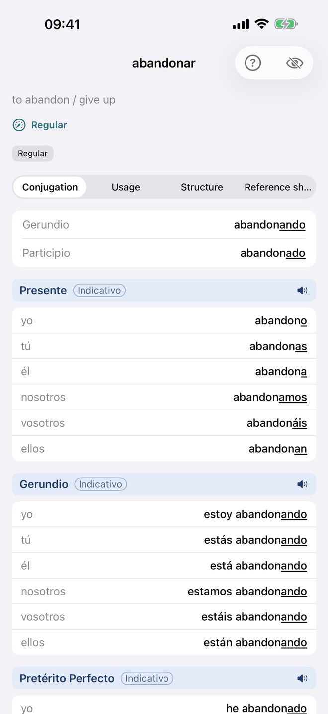
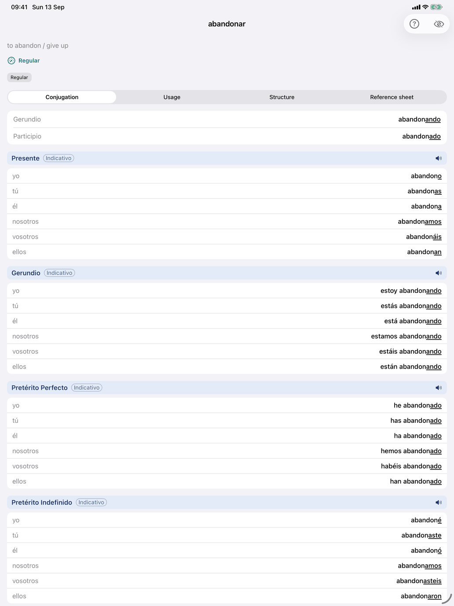
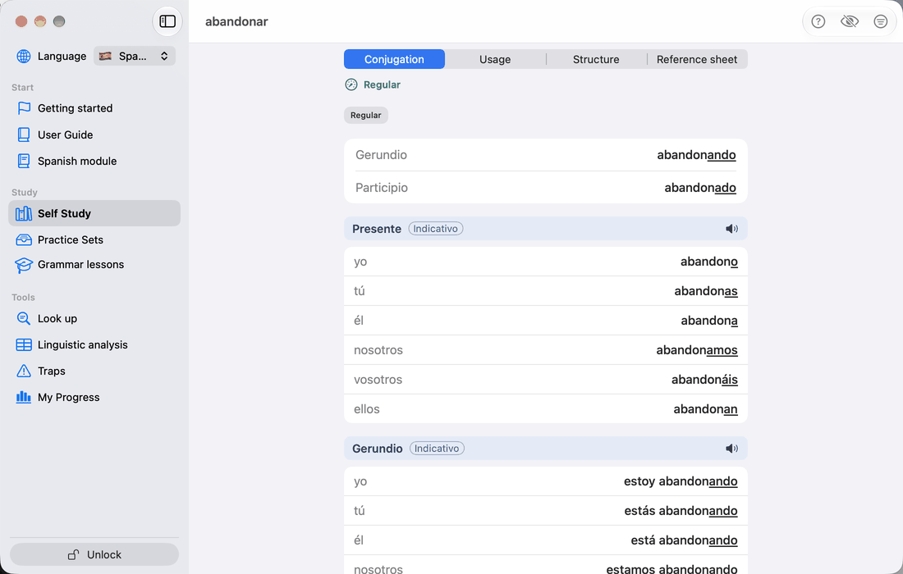
Tap any verb in Verb reference to open its detail screen. The same screen opens from a verb group's list of verbs, from Look up, and from the verb lists behind the ⓘ buttons on Select verb groups.
The header
Above the tabs you see what the verb means and what kind of verb it is:
- the translation of the infinitive (on the Mac, beside the infinitive in the title bar);
- Extended meaning, folded away — for a verb with several distinct senses, a numbered list of them. It goes with the translations: a scheme that shows none hides it too;
- a regularity line — Regular, Mostly regular or Irregular, with a count such as "2 things beyond the pattern", or "No pattern explains this verb" for verbs like ser;
- the group badges — see Verb group badges and info sheets below — and the verb's level;
- notes such as "Stative verb — not normally used in the progressive (estar + gerundio)." or "Impersonal — typically used only in the third person singular.";
- for a verb built on another — contener on tener, producir on conducir — a family note: "Belongs to the family of tener, with …" and the other members. Where the verb departs from its base the note says so, form by form: bendecir keeps its future, conditional, imperative and participle regular (bendeciré, not bendiré; he bendecido, not he bendicho). On the base verb the note lists the members, and adds "Learn this verb and you have them all" when none of them departs.
Below that, three tabs: Conjugation · Regularity · Reference sheet. The screen opens on Conjugation.
Conjugation
The Conjugation tab starts with the Gerundio and Participio, each marked irregular where it is. Below them comes one table per tense — the tenses of your level; if your level has none, the tab tells you so. When your level leaves tenses out, Also later levels (n) above the tables brings them in: the same setting as on the theory pages and Practice Sets, and it is kept. Each table lists the persons with their forms. Under the tense's name a line says what the tense is for, and under the table is the verb's own sentence in that tense, with its translation and a speaker button. On its header, the book icon opens that tense's theory — what it is for, its endings, examples — and the speaker icon reads the whole tense aloud.
By Tense / By Person. A picker above the tables switches the view. By Tense shows one table per tense, as above. By Person turns them around: one panel per person — yo, tú, … — listing that person's form in every tense, with the tense name above each form, so you can follow how one person's ending changes from tense to tense. The mood is named where it changes. The speaker on a panel reads that person through all the tenses. The choice is remembered across verbs.
Only irregular tenses. The filter button in the toolbar shows only the tenses where this verb departs from the pattern. The choice is remembered across verbs, and per device. While it hides tenses, a note above the tables says so — "Only irregular tenses: 4 of 16 shown." — with Show all tenses to switch it off.
Why a tense departs. Under the table of a tense where the verb departs is a fold-out, labelled with the verdict — Partly irregular, Regular endings, changed stem. Open, it gives the reason in a sentence, the stems the tense is built on (a stem to learn in amber), and for each person that departs the form the pattern predicts, struck through, beside the real one: ~~teno~~ tengo, ~~tenes~~ tienes.
Where a verb has authored translations, a toolbar button shows a translation under every conjugated form. For verbs with a second meaning, a second button switches all the translations on the page to that meaning. The book icon in the toolbar looks the verb up in online dictionaries.
For gustar-type verbs the tables also show The me gusta use — the forms that agree with the thing liked — beside the forms With an ordinary subject, each with its own example sentence.
The conjugation colour code
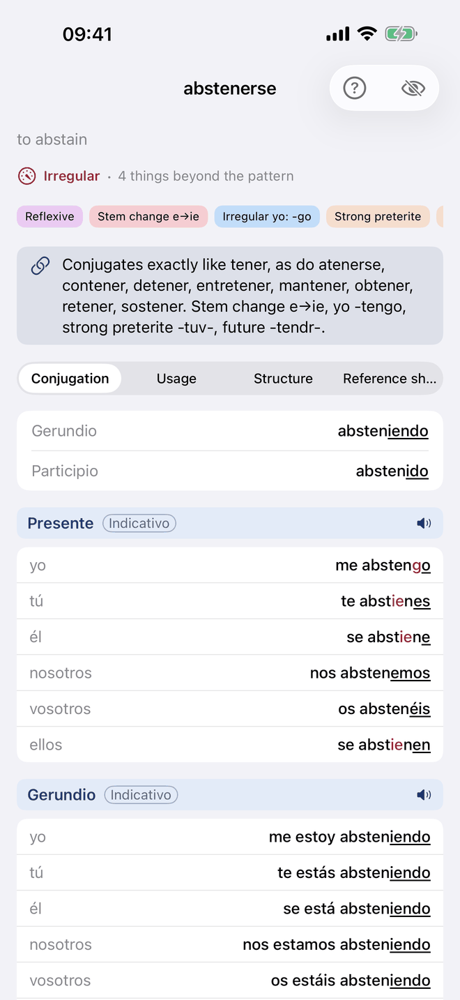
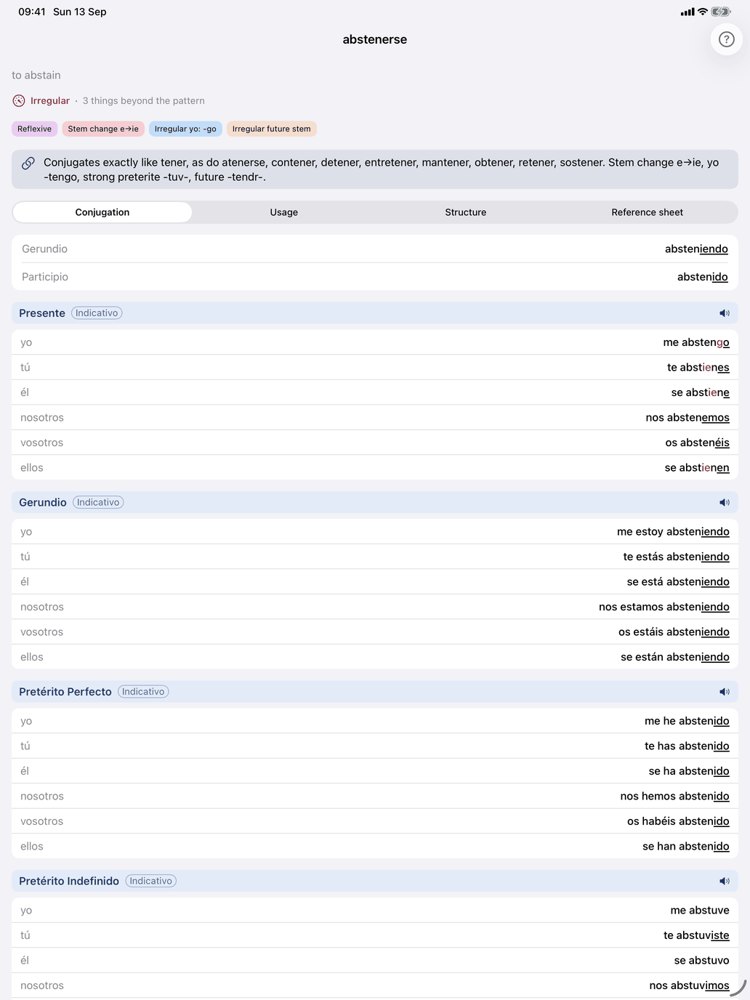
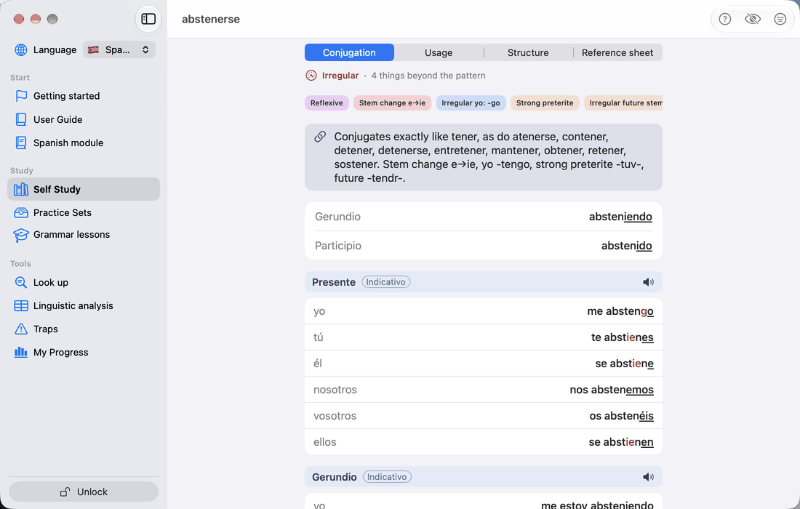
Irregular forms are colour-coded so you can see at a glance exactly where a verb departs from the regular pattern, and by how much.
- No colour — regular. The form is stem plus the standard ending. The ending is underlined: that is the part the pattern predicts.
- Red partial highlight — something changed within the form. Only the part that departs is red; the rest stays in the normal colour, and a regular ending is still underlined. For example:
- Stem changes: the changed vowel is red. Poder (o→ue) shows puedo, puedes, puede with ue in red, while podemos and podéis have no highlight because their stem does not change.
- Yo-form irregularities: only the inserted letters are red — the g of tengo, the z of conozco.
- Y-insertion: the inserted y is red — leyó, construyo — and the rest of the regular ending after it stays underlined: the -ó of leyó.
- Spelling shifts: the adjusted letters are red, as in jugué — a red u beside an underlined -é.
- Accent shift: the accented í or ú is red — envío, and leíste, where the accent falls on the ending and the rest of it, -ste, is underlined.
- Irregular future and conditional stem: the shortened stem is red — tendr- in tendré and tendría — and the ordinary endings after it are not.
- Full red — completely irregular. The whole form is red when it has no systematic connection to the regular pattern and must be learned as a whole: soy, eres, es and voy, vas, va, the imperfect era and iba, and irregular participles such as dicho and hecho, which are red in every compound tense.
- Red stem + blue ending — strong preterite. Strong preterites get two colours because there are two things to learn. The irregular stem is red (estuv-, pud-, vin-), and the ending is blue: strong preterites share their own ending set (-e, -iste, -o, -imos, -isteis, -ieron), which differs from the regular preterite and carries no written accent. Blue is used for nothing else.
Regularity
Regularity answers one question: where does this verb depart from the regular pattern? It lists only the tenses where it does, in the usual tense order. Each row has a coloured dot and a verdict — Regular endings, changed stem, Regular endings, learned form, Partly irregular, Irregular or No regular pattern — and under a partly irregular tense the persons that depart.
Under each tense is the stem it is built on. A stem you have to learn is in amber; so is a single form that carries a whole tense, such as the participle dicho for the compound tenses. That is why decir's pretérito indefinido reads Regular endings, changed stem: the endings are the ordinary strong-preterite set, and the amber stem dij- is the thing to learn. The two colours answer different questions: amber on Regularity names a whole stem or form to memorise, and red on Conjugation marks the letters of one form that departed.
A last line names the tenses that follow the pattern (Regular in the other tenses: …); a verb with nothing to learn shows only Regular in all tenses. Tap a tense to go to it on Conjugation, with its explanation open under the table.
Reference sheet
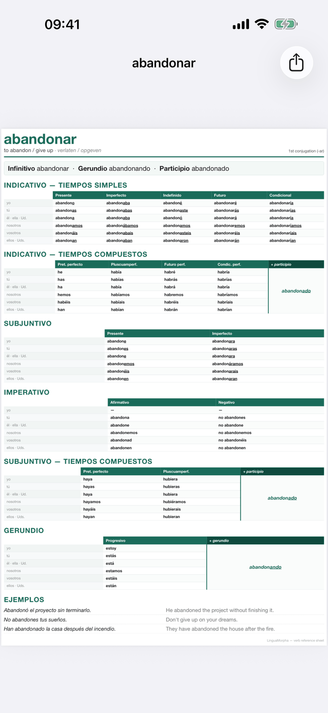
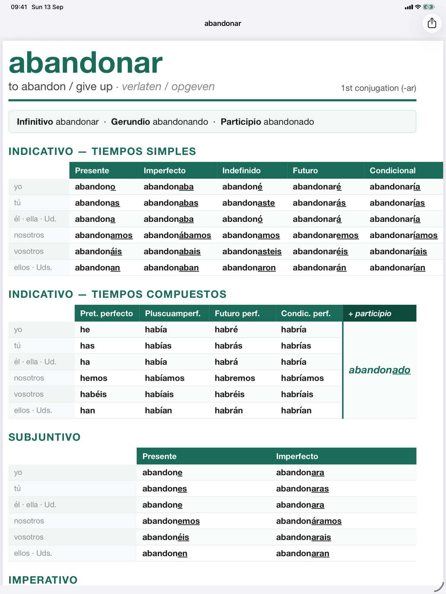
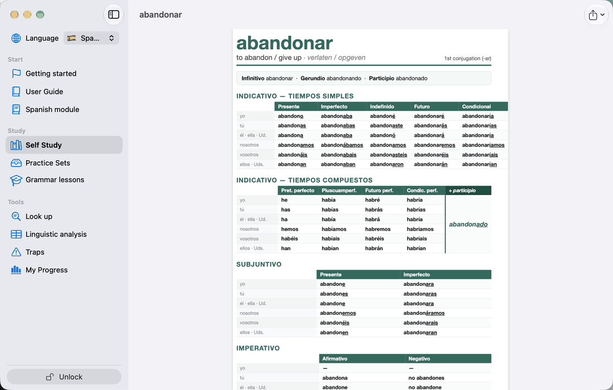
Reference sheet is a one-page printable PDF of the verb's forms. On iPhone and iPad, the share button sends, saves or prints it; on the Mac, the toolbar menu offers Copy and Save as….
Regular patterns
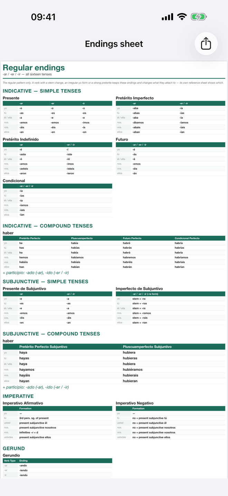
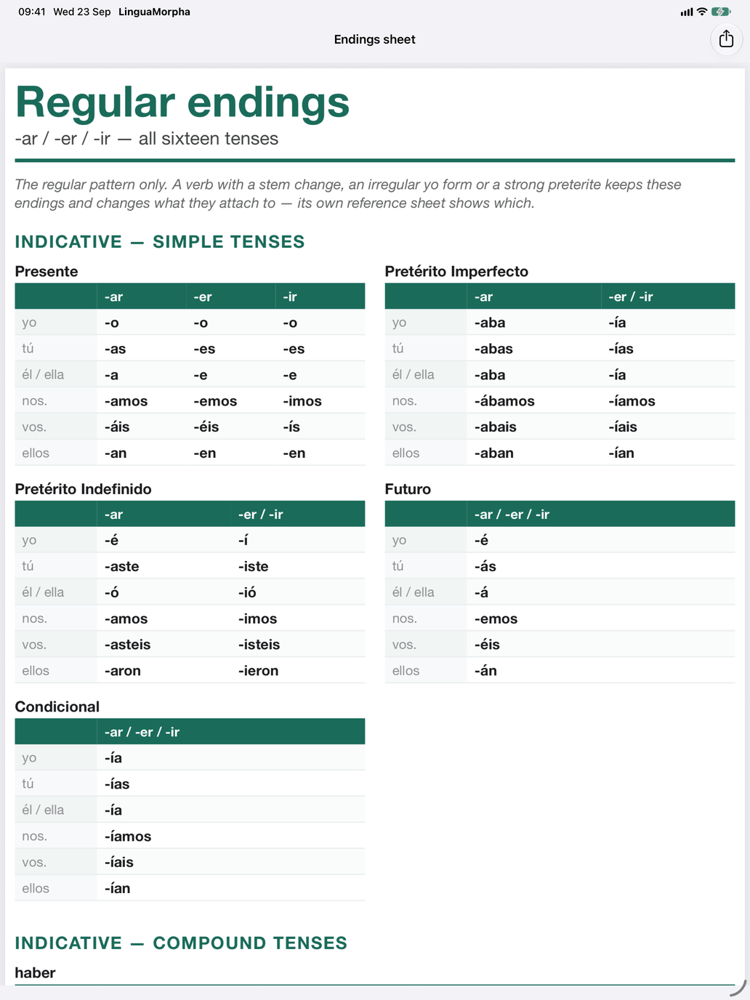
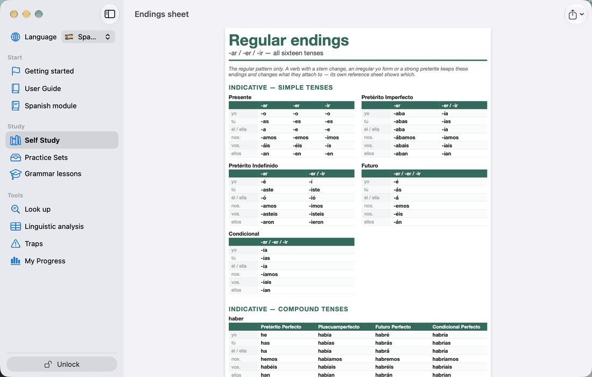
Regular patterns, at the bottom of the Verb groups page under To print, is the other printable page: the regular endings of all sixteen tenses at once, for -ar, -er and -ir. What a cell holds follows how the tense is built — the ending itself for a simple tense, haber's six forms with the participle noted under the table for a compound one, stem + ending for the imperfecto de subjuntivo, and the formation rule per person for the imperative, which borrows its forms rather than having endings of its own.
It is the regular pattern only. A verb with a stem change, an irregular yo form or a strong preterite takes these same endings; its own Reference sheet shows what they attach to, with the irregular material marked. The tables are the ones on each tense's card on the Tenses page — one tense at a time there, all sixteen here.
Irregular patterns
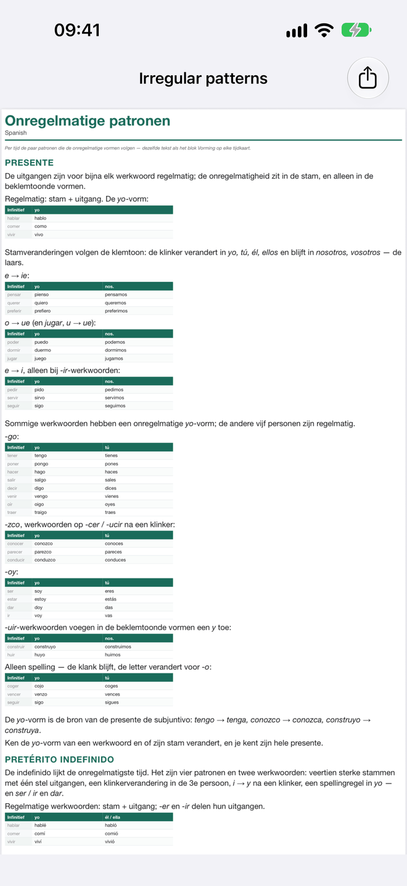
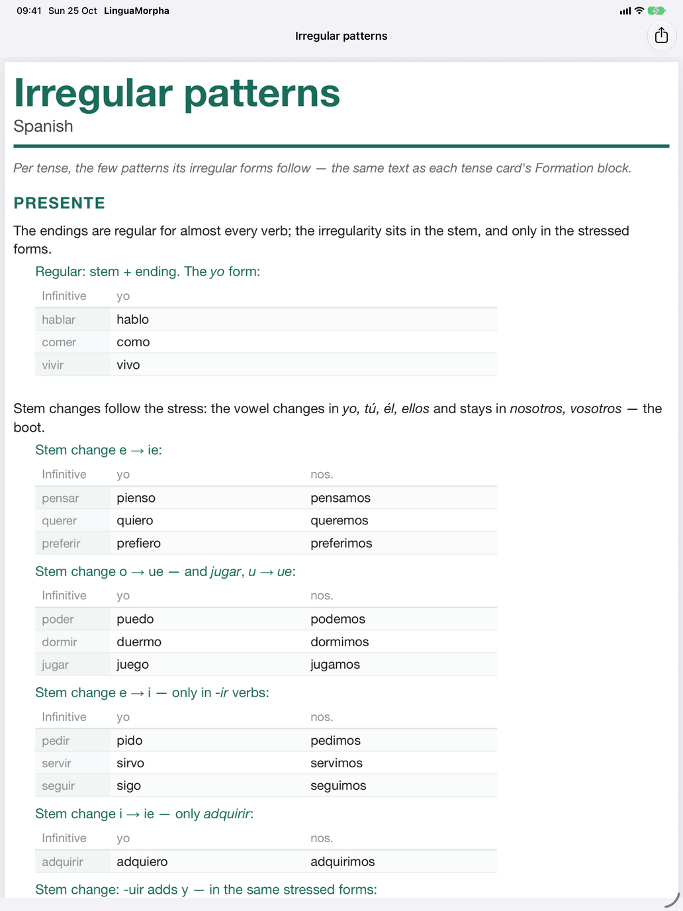
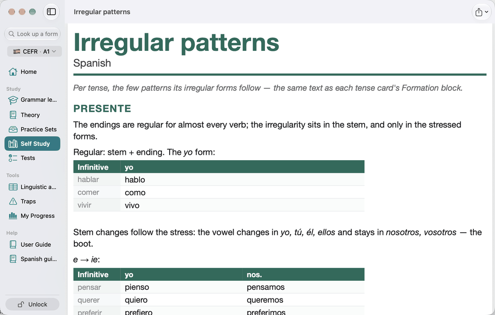
Irregular patterns, beside it under To print, is its companion: that one shows the regular endings, this one where the irregular forms come from. It prints every tense's Formation block — the few patterns its irregular forms follow, each a sentence and a short table — in tense order, the same text as the tense cards. A block that several tenses share, such as the participle list of the six compound tenses, is printed once; the later tenses point back to it. It runs to several pages.
Verb group badges and info sheets
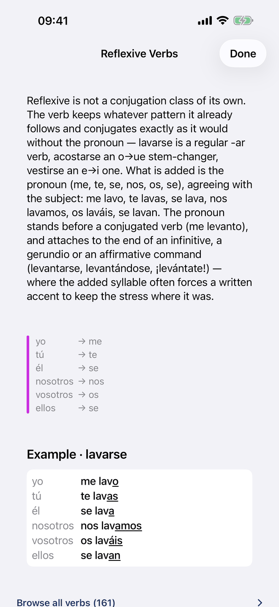
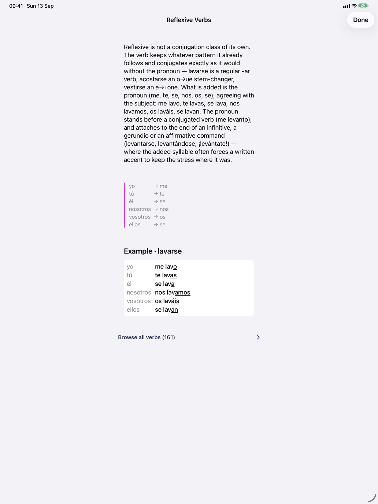
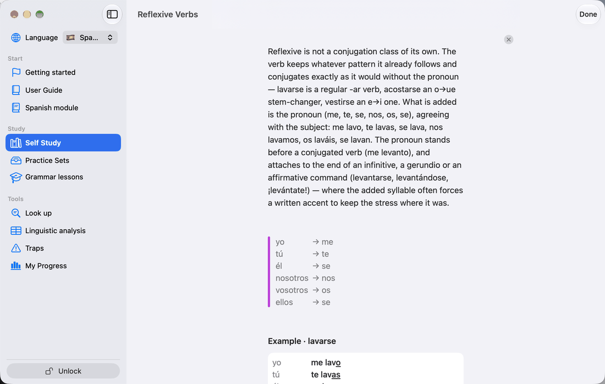
The badges in the header name the groups the verb belongs to — for example Stem change e→ie, Irregular yo: -go or Reflexive. They are coloured by family: grey for Regular, red for stem changes, blue for yo-form and spelling changes, orange for an irregular stem in one tense and for the verbs that fit no pattern, purple for reflexive, impersonal, gustar-type and stative verbs.
Tap a badge to open the group's information sheet: a plain-language explanation of the pattern, a note on which persons it affects where that applies, a worked example table, and Browse all verbs with the number of verbs in the group. The same sheet opens from the ⓘ on Select verb groups and from Verb groups under Theory.
In the Browse all verbs list a verb family is one row: the base verb, with +N for the verbs built on it and its -se form — volver +3 stands for devolver, envolver and volverse. Tap the row to see the family; a verb without a family opens its page directly. Search still finds every member: devolver shows the volver row.
Tip: In Produce the conjugation and Recognise the conjugation, once your answer is graded a book icon on the card shows the verb's table for that tense — useful right after a wrong answer.